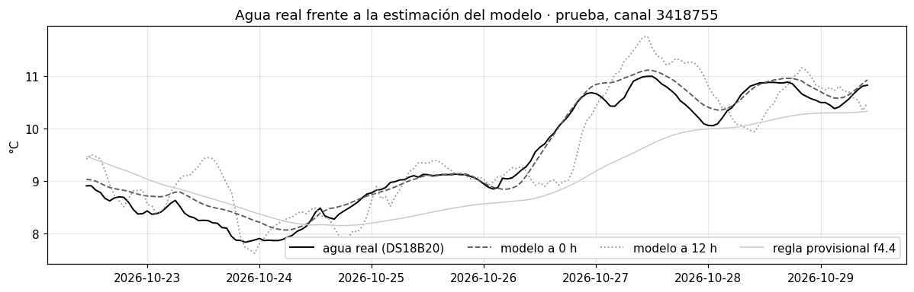
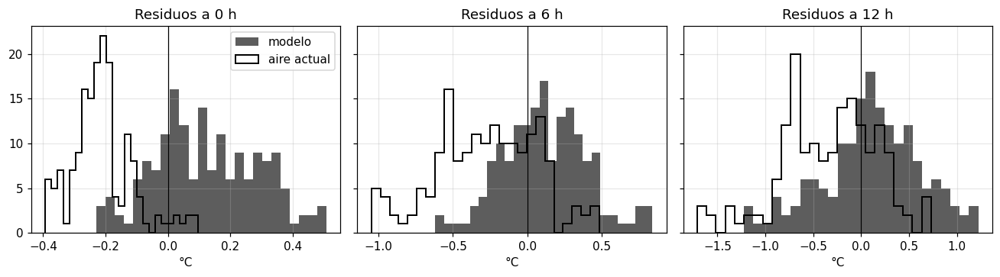
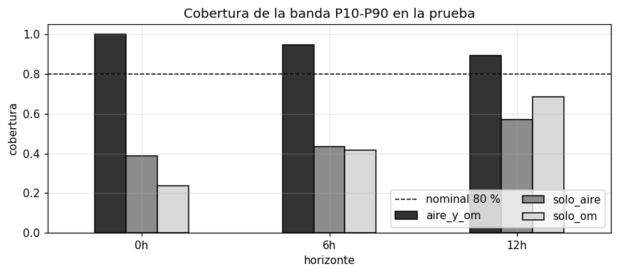
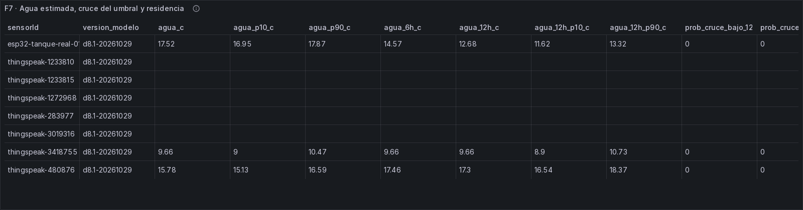
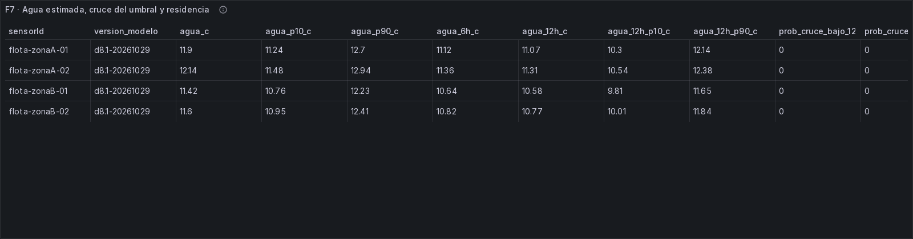

Modelo D8: temperatura del agua almacenada y horas de residencia¶
Dimensión D8 (Josué Ochoa). Versión d8.1, entrenada el 2026-10-29 con la partición p6.2.
Gráficos y evidencia: al final de la página, en Gráficos del notebook y del tablero en vivo.
- Código:
batch/modelo_d8.py(configuración enbatch/modelo_d8.yml) ybatch/termico.py, el modelo, sin dependencias fuera de numpy, para F7. - Modelo guardado:
batch/modelos/d8/d8.1-20261029/(modelo.jsonymanifiesto.json). - Evidencia:
docs/evidencias/f6-d8/. - Plantilla:
docs/modelo-d2.md,docs/modelo-d4.mdydocs/modelo-d6.md, con las mismas reglas de evaluación.
Qué se puede afirmar y qué no. - El único dato real de temperatura del agua es el canal de ThingSpeak 3418755, un tanque de agua de lluvia en el noroeste de Inglaterra. Allí el modelo se evalúa contra el agua medida: eso sí es una medición. - La evidencia real son 8 días de prueba de un solo canal (168 horas, más 13 días de ajuste). Alcanza para decir que el método funciona en ese tanque, no para generalizar a otros tanques, estaciones ni climas. - En Juliaca no hay sensor de agua. Lo que se reporta para el ESP32 y la flota es un error de transferencia (cuánto cambia la estimación según el modelo y sus parámetros), no una medición. El supuesto declarado es que el tanque de Juliaca responde al aire como el del canal, aunque el tanque y el clima son distintos. - El τ = 24.3 h es el del tanque del canal 3418755. τ depende del volumen y del aislamiento del tanque; el recipiente del ESP32 es mucho más pequeño y su τ real será menor (sección 6, "La causa principal del error de transferencia").
1. Qué pregunta responde y qué decisión habilita¶
¿A qué temperatura está el agua del tanque ahora y a cuánto estará en 6 y 12 horas? ¿Puede cruzar un umbral de riesgo (helada o agua tibia) en las próximas 12 horas? ¿Cuántas horas lleva el agua almacenada?
Con la respuesta, la familia o el administrador pueden decidir:
- proteger el tanque y la tubería antes de una helada: en Juliaca las noches bajan de 0 °C en invierno;
- renovar el agua cuando lleva muchas horas guardada y está tibia, que es cuando el cloro se pierde más rápido;
- y, junto con D2 y D4, cuándo conviene usar o reponer el agua.
2. Datos¶
| Nivel | Qué datos | Agua medida | Para qué |
|---|---|---|---|
| ThingSpeak 3418755 | 70 días: aire dentro del tanque (field2), agua (field3, DS18B20), nivel; más Open-Meteo de su ubicación (53.45, −2.51), descargado con la misma API pública que Juliaca (batch/datos/fuentes/f8_open_meteo_3418755.json) |
Sí (1,606 horas) | Entrenar, ajustar y evaluar |
| Flota f2b.1 y f2b.2 | Aire de la cámara simulado y Open-Meteo Juliaca (tabla oro d8_termica) |
No (el generador no simula el agua) | Transferencia y residencia |
| ESP32 | 34 horas con aire de la cámara (DHT11) y Open-Meteo Juliaca | No | Transferencia (pendiente de la prueba real) |
- Partición p6.2 del canal: entrenamiento hasta 8 días antes del final, 24 h de embargo y prueba en los últimos 7 días.
- Conjunto de ajuste: el último 20 % del entrenamiento (por tiempo). Ahí se elige el modelo principal y se calibra la banda.
- Horas con agua medida por conjunto: entrenamiento 1,131, ajuste 283, embargo 24, prueba 168.
- Huecos del aire del canal (141 h): se rellenan con Open-Meteo (aire = 2.68 + 0.88 · Open-Meteo, ajustado en el entrenamiento), igual que hará F7 cuando el DHT11 no transmita.
3. Cómo se estima la temperatura del agua y la residencia¶
El agua se simula desde el aire, nunca desde una medición del agua. En Juliaca no hay sensor de agua, así que el modelo no puede "corregirse" con el agua real; en el canal se evalúa igual, sin usarla como entrada.
- Inercia de primer orden, paso de 1 h: F(t) = a · F(t−1) + (1 − a) · aire(t), con a = e^(−1/τ). τ es la constante de tiempo: cuántas horas tarda el agua en seguir al aire.
- Agua estimada = g₁ · F_τ(aire de la cámara) + g₂ · F_τ(aire de Open-Meteo) + c.
- Cómo se ajusta: para cada τ de una rejilla de 2 a 120 h, las ganancias y la constante salen por mínimos cuadrados en el entrenamiento; gana el τ con menor error.
- Pronóstico a 6 y 12 h: los filtros siguen con el aire futuro = ciclo horario de los últimos 7 días + la anomalía actual. Es la misma idea de la regla provisional; no se usa el aire futuro observado.
- Banda P10-P90: predicción conforme con los residuos del conjunto de ajuste, por horizonte (0, 6 y 12 h).
- Probabilidad de cruzar un umbral en 12 h: el máximo, entre las 12 horas, de la fracción de residuos del ajuste que llevarían el pronóstico al otro lado del umbral.
Residencia (edad media del agua). Supone un tanque bien mezclado:
- cada llenado aporta agua de edad 0, en proporción al volumen renovado;
- el consumo saca agua de todas las edades por igual;
- la edad de todo el tanque sube 1 hora por hora.
Llenados: las llegadas de D4. Son las del detector congelado (tabla d4_llegadas) y los llenados por subida
sostenida (el criterio de D2 y D4), que son los que se ven en los canales de ThingSpeak en %. La ventana de cada
llenado se extiende hacia atrás hasta el mínimo de nivel de las 3 h previas, porque la subida sostenida se dispara
cuando el agua ya entró.
El agua que ya estaba antes del primer llenado visto tiene edad desconocida. Por eso la residencia solo se informa cuando más del 90 % del agua tiene edad conocida.
4. Los modelos¶
Modelo principal: inercia de primer orden con el aire de la cámara y Open-Meteo¶
| Variante | Entradas | τ (h) | Ganancias | Constante |
|---|---|---|---|---|
| aire_y_om (principal) | aire de la cámara + Open-Meteo | 24.3 (bootstrap de días: 22.7-26.3) | 0.45 · aire + 0.58 · Open-Meteo | −0.49 °C |
| solo_aire | aire de la cámara | 27.9 | 0.99 · aire | −0.45 °C |
| solo_om | Open-Meteo | 22.7 | 0.90 · Open-Meteo | +2.05 °C |
- Elección del principal: el de menor error en el ajuste (0.29 °C frente a 0.46 y 0.92), antes de mirar la prueba.
- Lectura física: el τ ajustado (~24 h) es casi el de la regla provisional (25.2 h), que se había deducido de la amplitud (15 %) y el atraso (5-7 h) del mismo canal. Los dos caminos coinciden.
- Las dos entradas se complementan:
- el aire de la cámara capta el sol y el calor del día sobre el tanque;
- Open-Meteo, el clima de fondo;
- con las dos, el modelo no se deja arrastrar por el calentamiento del sol en el aire de la cámara.
- Por qué no un modelo más complejo (ARX con muchos rezagos o GBT):
- con un solo canal real y 70 días, cada parámetro extra es una oportunidad de sobreajuste;
- la inercia de primer orden tiene sentido físico (el agua es una masa térmica que sigue al aire con retraso);
- se explica con un número (τ);
- transfiere a Juliaca sin reentrenar;
- es un ARX con un rezago, en el que la ganancia de cada entrada es el coeficiente del aire de la cámara y de Open-Meteo.
Líneas base (obligatorias)¶
| Línea base | Agua ahora | Agua en 6 y 12 h |
|---|---|---|
| (a) Agua = aire actual | aire de la cámara ahora | igual |
| (b) Agua = media del aire de las últimas 24 h | media de 24 h | igual |
| (c) Inercia provisional de f4.4 | primer orden, τ = 25.2 h, ganancia 1, solo aire (la regla umbral_termico congelada) |
ciclo + anomalía, como el modelo |
Las reglas congeladas no se tocaron: la línea base (c) usa los mismos parámetros que la regla (streaming/reglas_servicio.yml).
5. Cómo se evitó mirar la prueba¶
- El modelo, las tres variantes y τ se ajustan solo con la partición
entrenamientodel canal, sin el último 20 %. - El principal y la banda se eligen y calibran en ese 20 % (ajuste).
- La prueba son los últimos 7 días (p6.2), con 24 h de embargo. Se miró una sola vez, al final.
- ESP32 y flota: nada de Juliaca se usó para ajustar. No hay agua medida que mirar.
6. Resultados¶
Tablas completas en docs/evidencias/f6-d8/tablas_d8.md. Hay 13 días de ajuste y 8 de prueba (mínimo 7), así que la
evidencia de temperatura es suficiente. Los IC son por bootstrap de bloques de 24 h.
Temperatura del agua en el canal real (MAE en °C)¶
| Predictor | Ajuste: ahora | Ajuste: 12 h | Prueba: ahora | Prueba: 6 h | Prueba: 12 h |
|---|---|---|---|---|---|
| Principal (aire + OM) | 0.29 [0.21, 0.39] | 0.57 [0.42, 0.73] | 0.16 [0.10, 0.23] | 0.24 [0.17, 0.33] | 0.41 [0.31, 0.55] |
| Solo aire | 0.46 [0.38, 0.61] | 0.57 [0.47, 0.70] | 0.91 [0.57, 1.36] | 0.91 [0.57, 1.36] | 0.95 [0.61, 1.39] |
| Solo Open-Meteo | 0.92 [0.64, 1.17] | 1.12 [0.83, 1.35] | 1.79 [1.70, 2.03] | 1.75 [1.64, 2.04] | 1.73 [1.48, 2.09] |
| (a) Aire actual | 0.98 [0.67, 1.32] | 1.06 [0.82, 1.31] | 0.22 [0.18, 0.26] | 0.35 [0.26, 0.48] | 0.47 [0.33, 0.70] |
| (b) Media del aire 24 h | 0.51 [0.37, 0.66] | 0.81 [0.60, 1.03] | 0.41 [0.28, 0.63] | 0.52 [0.36, 0.82] | 0.64 [0.41, 0.98] |
| (c) Provisional f4.4 | 0.48 [0.29, 0.70] | 0.68 [0.51, 0.87] | 0.61 [0.46, 0.82] | 0.63 [0.49, 0.83] | 0.68 [0.51, 0.90] |
Banda P10-P90 del principal: en la prueba cubre el 100 % ahora, el 95 % a 6 h y el 89 % a 12 h. Su ancho es de 0.9, 1.2 y 1.7 °C.
Probabilidad de cruzar un umbral en las próximas 12 h¶
Los umbrales configurados (4 y 25 °C) no se pueden evaluar: el agua del canal va de 7.8 a 18.7 °C y nunca los cruza (0 horas). Para medir si la probabilidad de cruce está bien calibrada se usa una rejilla de umbrales de evaluación (cada 0.5 °C, de 8 a 18.5 °C) y se suman los cruces de todos.
| Lado | Conjunto | Orígenes (con cruce) | Episodios | Modelo: Brier (skill) | (a) Aire actual | (b) Media 24 h | (c) Provisional |
|---|---|---|---|---|---|---|---|
| Hacia abajo | Ajuste | 2,182 (258) | 23 | 0.066 (+0.42) | 0.120 (−0.06) | 0.126 (−0.12) | 0.116 (−0.02) |
| Hacia abajo | Prueba | 492 (65) | 6 | 0.076 (+0.43) | 0.134 (−0.02) | 0.240 (−0.82) | 0.264 (−1.00) |
| Hacia arriba | Ajuste | 4,039 (175) | 15 | 0.027 (+0.80) | 0.070 (+0.47) | 0.056 (+0.58) | 0.065 (+0.51) |
| Hacia arriba | Prueba | 2,938 (97) | 7 | 0.019 (+0.88) | 0.033 (+0.79) | 0.028 (+0.82) | 0.036 (+0.76) |
El skill se mide contra la frecuencia de cruce del entrenamiento. Las líneas base dan un sí o un no (cruza o no cruza en su pronóstico), sin probabilidad.
Cómo leer los resultados¶
- El modelo estima el agua con ~0.2-0.3 °C de error y la pronostica a 12 h con ~0.4-0.6 °C. Le gana a todas las líneas base en el ajuste y en la prueba.
- En la prueba, la línea base (a) se acerca (0.22 frente a 0.16 °C ahora; 0.47 frente a 0.41 a 12 h, con IC que se solapan a 12 h). En los días fríos de octubre, el aire dentro del tanque casi coincide con el agua. En el ajuste, en cambio, (a) se equivoca en 1 °C.
- El modelo es el único bueno en los dos periodos.
- Una sola entrada no alcanza. "Solo aire" y "solo Open-Meteo" van bien en el ajuste, pero en la prueba se desvían (−0.9 y +1.8 °C de sesgo): con el cambio de estación, cada entrada sola deja de representar al agua. Combinadas, el sesgo de la prueba es de +0.1 °C.
- Lo que implica para Juliaca: cuando el ESP32 no transmite, F7 tendrá solo Open-Meteo, que es la variante menos confiable. Es una limitación declarada.
- La inercia provisional (c) era razonable, pero no ajustada: su τ es casi el correcto, pero sin ganancias ni la segunda entrada se equivoca 0.5-0.7 °C. El modelo reduce ese error a la mitad o menos.
- La banda es conservadora en la prueba (89-100 % frente al 80 % nominal): se calibró en un periodo más variable (fines de septiembre).
- Probabilidad de cruce:
- Bien calibrada (calibración global de +0.01 a +0.05) y con skill positivo en los dos lados.
- Supera a las líneas base, que con un sí o un no se equivocan más (hacia abajo, sus skill son negativos).
- Evidencia suficiente en el ajuste (23 y 15 episodios) e indicativa en la prueba (6 y 7).
- Es la calibración del método, no la del riesgo real: los umbrales de 4 y 25 °C nunca ocurrieron en el canal.
Transferencia a Juliaca (error de transferencia, NO medición)¶
| Fuente | Horas | Principal P05 / P50 / P95 | Provisional P50 | Diferencia absoluta media con la provisional | Incertidumbre por parámetros (ancho P10-P90) | Horas estimadas bajo 4 °C |
|---|---|---|---|---|---|---|
| Flota f2b.1 | 2,592 | 8.7 / 10.3 / 11.7 °C | 10.5 °C | 0.86 °C | 0.50 °C | 0 |
| Flota f2b.2 | 2,592 | 8.0 / 9.9 / 11.6 °C | 9.7 °C | 0.72 °C | 0.55 °C | 0 |
| ESP32 | 34 | 9.8 / 10.4 / 12.6 °C | 12.7 °C | 1.89 °C | 0.63 °C | 0 |
- Error de transferencia declarado: ~0.7-0.9 °C de diferencia con la regla provisional, más ~0.5-0.6 °C de incertidumbre por los parámetros (bootstrap de días del canal).
- El supuesto de fondo: que el tanque de Juliaca siga al aire como el del canal (mismo τ y mismas ganancias). Con otro tamaño, color o aislamiento, τ cambia. Ese error no se puede medir sin un sensor de agua en Juliaca.
- En el ESP32 la diferencia es mayor (1.9 °C). Sus horas son de la tarde, con la cámara a ~20 °C y Juliaca a ~8 °C. La regla provisional sigue solo a la cámara; el modelo pesa también el aire exterior.
- En septiembre y octubre la estimación nunca baja de 4 °C en ningún modelo. El riesgo de helada del agua se concentra en el invierno (junio-agosto), fuera de estos datos.
La causa principal del error de transferencia: τ depende del volumen y del aislamiento¶
τ = 24.3 h es una propiedad del tanque del canal 3418755, no del agua. En un modelo de inercia de primer orden:
τ = (masa de agua × calor específico) / (coeficiente de intercambio × área de las paredes) = ρ · c · V / (h · A)
- El volumen aumenta τ: más agua es más inercia.
- El área y un mal aislamiento lo reducen: más superficie y paredes delgadas intercambian calor más rápido.
- Escala con el volumen: con forma y material parecidos, el área crece como V^(2/3), así que τ ∝ V^(1/3).
Orden de magnitud del τ esperado. El volumen del tanque del canal no se publica: es un tanque de lluvia de 100 cm de alto, entre ~300 y ~1,000 L según la forma.
| Recipiente | τ esperado si el canal tiene 300 L | Si tiene 1,000 L |
|---|---|---|
1,100 L (geometría provisional del ESP32, tanques.yml) |
~38 h | ~25 h |
| 100 L | ~17 h | ~11 h |
| 20 L (balde) | ~10 h | ~7 h |
| 5 L | ~6 h | ~4 h |
El recipiente de prueba del ESP32 es mucho más pequeño que la geometría provisional, del orden de un balde. Su τ real estaría entre ~4 y ~10 h, no en 24 h. Además, un recipiente de plástico delgado sin aislar intercambia calor más rápido, y eso lo baja todavía más.
Efecto: con τ = 24.3 h, el modelo aplicado al ESP32 respondería con retraso. Seguiría al aire unas 2-5 veces más lento que el agua real: subestimaría el calentamiento de la tarde y el enfriamiento de la noche. Medido con el aire de Juliaca de la flota (misma entrada, mismas ganancias, solo cambia τ):
| τ real del recipiente | Diferencia media con τ = 24.3 h | P95 |
|---|---|---|
| 32 h | 0.16 °C | 0.34 °C |
| 12 h | 0.64 °C | 1.26 °C |
| 8 h | 1.20 °C | 2.29 °C |
| 5 h | 1.99 °C | 3.75 °C |
- Es la causa principal del error de transferencia: para un recipiente de 5-20 L, 1-2 °C de error medio y hasta ~4 °C en las horas extremas. Es más que la incertidumbre de los parámetros (~0.5 °C) y que la diferencia con la regla provisional (~0.8 °C).
- También pesa en el riesgo: el retraso subestimaría la helada en un recipiente pequeño, que se enfría más rápido que el modelo.
- Cuándo se corrige: τ es el único parámetro que habría que reajustar por recipiente, y solo se puede medir con el agua (sección 8).
Horas de residencia¶
| Tanque | Con edad conocida | Mediana | P90 |
|---|---|---|---|
| Flota (8 tanques) | 6-57 % de los pasos | 24-77 h | 37-102 h |
| ThingSpeak 1233810 (doméstico) | 22 % | 41 h | 56 h |
| ThingSpeak 3418755 (lluvia) | 28 % | 29 h | 62 h |
| ThingSpeak 1233815 y 283977 | 0 % (no se llenaron en el periodo) | — | — |
| ESP32 | 0 % (sin llenados reales) | — | — |
- La edad se conoce solo en una parte del tiempo. Hace falta que los llenados reemplacen el 90 % del agua que ya estaba, y en tanques grandes que se renuevan poco eso tarda días.
- Relación con la temperatura:
- En el canal real no hay relación (Spearman −0.08, 459 h): allí los "llenados" son lluvia fría, y el agua nueva enfría el tanque.
- En la flota, el agua más vieja está algo más tibia (+0.27): 9.6-9.8 °C con menos de 24 h frente a 10.4-10.7 °C con más de 48 h, porque el agua del tanque sigue al aire del día.
- Se reporta como descripción, no como modelo.
7. Precisión limitante: el DHT11¶
El DHT11 tiene una precisión de ±2 °C y, en algunos modelos, redondea a grados enteros. El efecto se midió en la prueba, alterando el aire del canal:
| Alteración del aire de la cámara | Principal (aire + OM) | Solo aire |
|---|---|---|
| Sesgo de +2 °C | +0.90 °C en el agua estimada (MAE de 0.16 a 1.03) | +1.98 °C |
| Sesgo de −2 °C | −0.90 °C | −1.98 °C |
| Redondeo a 1 °C | +0.02 °C (despreciable) | +0.04 °C |
- El sesgo del DHT11 es la precisión limitante, no el redondeo: con el modelo principal, un DHT11 descalibrado en 2 °C desplaza el agua estimada en ~0.9 °C. Es más que todo el error del modelo en la prueba (0.16 °C).
- El redondeo casi no importa: la inercia de 24 h promedia los escalones.
- Mitigación:
- el modelo principal pesa el DHT11 solo en ~0.45, así que el sesgo llega a la mitad;
- un DHT11 se puede contrastar con Open-Meteo en las horas nocturnas sin sol, como chequeo de calibración en la prueba real.
8. ESP32: métrica final pendiente¶
- No hay sensor de agua en el ESP32, así que no puede haber una métrica real de la temperatura del agua en Juliaca.
- El DS18B20 es opcional; hoy no lo tenemos. Si se instala un termómetro sumergible (DS18B20, el del canal 3418755) en el recipiente durante la prueba en vivo, aunque sea por unos días:
- permite medir el agua en Juliaca, el primer dato real, y así el error de transferencia de verdad;
- permite ajustar el τ del recipiente: con 2-3 días de agua medida se reajusta τ (y, si hace falta, las
ganancias) con el mismo
ModeloTermico.ajustar, sin cambiar el método.
Sin él, D8 en Juliaca queda como estimación con el error de transferencia declarado. - La residencia del ESP32 se mide en vivo cuando haya llenados reales anotados en la bitácora.
9. Limitaciones¶
- Un solo canal real, en otro clima, con 8 días de prueba: el tanque de 3418755 es de lluvia, en Inglaterra, con otro tamaño y aislamiento. El método se valida con datos reales; los parámetros, en Juliaca, son un supuesto.
- τ depende del recipiente: el del ESP32 es mucho más pequeño y su τ real sería de ~4-10 h, no 24 h. Es la causa principal del error de transferencia (1-2 °C de media) y solo se corrige midiendo el agua (DS18B20, opcional).
- Septiembre-octubre: no hay invierno ni verano en los datos. Los umbrales de riesgo (4 y 25 °C) no ocurrieron, así que la probabilidad de cruce se calibró con umbrales de evaluación.
- El volumen del tanque no entra en τ. Un tanque casi vacío cambia de temperatura más rápido que uno lleno. Agregar el nivel como modulador de τ queda para d8.2.
- Sin el DHT11, solo Open-Meteo: es la variante con más sesgo en la prueba (+1.8 °C). En Juliaca el ESP32 casi no transmite de noche, justo cuando importa la helada.
- Residencia: depende de detectar bien los llenados (D4) y de que el tanque esté bien mezclado; con estratificación (agua nueva arriba, vieja abajo) la edad real del fondo es mayor.
10. Uso en F7¶
batch/termico.py (ModeloTermico.desde_dict) carga batch/modelos/d8/d8.1-20261029/modelo.json. Cada hora, por
tanque:
- Agua ahora:
- con el DHT11 si hay lectura, y si no, con el aire de la cámara reconstruido desde Open-Meteo (amortiguación de 0.6, el supuesto del generador);
- más Open-Meteo Juliaca, con el modelo principal;
- se muestra con su banda P10-P90.
- Agua en 6 y 12 h: se pronostica con su banda.
- Probabilidad de cruzar 4 °C (o 25 °C) en 12 h, con los residuos guardados del ajuste.
- Convive con la regla
umbral_termico, que sigue congelada y provisional: la regla avisa; el modelo da la temperatura y la probabilidad. - Horas de residencia (edad media), cuando más del 90 % del agua tenga edad conocida.
- Siempre rotulado: "estimación, sin sensor de agua; error de transferencia de 1-2 °C (τ del recipiente sin medir)".
11. Preguntas probables del jurado¶
1. "¿Cómo saben la temperatura del agua si no la miden?" La estimamos desde el aire, con un modelo físico simple: el agua es una masa que sigue al aire con retraso, y tarda unas 24 horas en hacerlo. Lo entrenamos y probamos con el único tanque público que mide a la vez el aire y el agua: allí se equivoca en 0.16 °C ahora y 0.41 °C a 12 horas, en días que el modelo nunca vio. En Juliaca no lo podemos comprobar sin un termómetro en el agua, y lo declaramos como error de transferencia (1-2 °C para un recipiente pequeño). Son 8 días de prueba de un solo canal: alcanza para el método, no para generalizar.
2. "¿Por qué usan un tanque de Inglaterra para Juliaca?" Porque es el único dato real de temperatura del agua disponible, y la física es la misma: un volumen de agua que sigue al aire. Lo que cambia es la rapidez (τ), que depende del volumen y del aislamiento: el τ de 24 horas es el de ese tanque, y el recipiente del ESP32, mucho más pequeño, tendría un τ de unas 4-10 horas. Esa es la causa principal del error en Juliaca. Por eso lo reportamos aparte, como transferencia y no como medición. Si instalamos un DS18B20 (es opcional y hoy no lo tenemos), podríamos medir el agua y ajustar el τ del recipiente.
3. "¿Su modelo es mejor que la regla que ya tenían?" La regla provisional usaba τ = 25.2 h, deducido del mismo canal, y el ajuste dio 24.3 h: el razonamiento era correcto. Pero la regla seguía solo al aire de la cámara, sin ganancias. El modelo ajustado reduce el error de 0.6 a 0.16 °C en la prueba, y también le gana a "agua = aire" y a la media de 24 horas.
4. "¿Cuánto afecta que el DHT11 sea un sensor barato?" El redondeo casi no afecta, porque la inercia promedia los escalones. Lo que sí afecta es la descalibración: si el DHT11 marca 2 °C de más, el agua estimada sube ~0.9 °C, que es más que todo el error del modelo. Por eso el modelo pesa el DHT11 solo a la mitad, junto con Open-Meteo, y proponemos chequear el DHT11 contra Open-Meteo de noche.
5. "¿El agua guardada más tiempo está más caliente?" En la flota, un poco: el agua de más de 48 horas está ~0.8 °C más tibia que la de menos de 24, porque sigue el aire del día. En el tanque real de lluvia no hay relación, porque allí lo que llega es lluvia fría que enfría el tanque. Calculamos la edad como la de un tanque bien mezclado, renovado por cada llegada de agua, y la reportamos como descripción, junto a la temperatura.
12. Reproducir¶
# Requiere la capa oro (d8_termica, d2_autonomia, d4_llegadas) y la plata (Open-Meteo Juliaca). Descarga una vez
# Open-Meteo de la ubicación del canal 3418755 (batch/datos/fuentes/f8_open_meteo_3418755.json, no versionado)
.venv/Scripts/python batch/modelo_d8.py # ~35 s
Gráficos del notebook y del tablero en vivo¶
Los gráficos salen del notebook notebooks/u2/d8_temperatura.ipynb, que reproduce las cifras de esta página desde los modelos versionados, sin reentrenar. Las capturas del tablero BI son de F7 (docs/evidencias/f7/).

Gráfico 1. Semana de prueba del canal 3418755: agua real (DS18B20) frente al modelo a 0 h y a 12 h y a la regla provisional f4.4. El modelo sigue al agua real; la regla provisional se atrasa y se aplana.

Gráfico 2. Residuos del modelo y de la base “aire actual” a 0, 6 y 12 h. La base queda sesgada hacia valores negativos; el modelo se centra más cerca de cero y se ensancha con el horizonte.

Gráfico 3. Cobertura de la banda P10-P90 en la prueba por variante. Solo la variante validada (aire + Open-Meteo) cubre más del 80 % en los tres horizontes; solo aire y solo Open-Meteo quedan muy por debajo.
Tablero BI en vivo (F7)¶

Tabla F7 con datos reales.

Tabla F7 con la flota extrapolada.